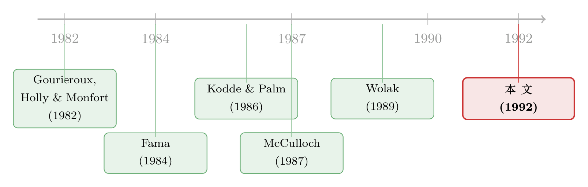

十个不等号的审判：当 t 值说『不单调』，联合检验却说『证据不足』
本文读的是 Richardson, Richardson & Smith (1992, JFE)：他们用一种「检验不等式约束」的新方法，重新审判了 Fama (1984) 关于「期限溢价不单调」的著名证据。结论是——一旦把各期限溢价之间的高度相关性老老实实地放进同一个联合检验，所谓的「不单调」基本只剩下一处异常（1964–1972 年九月期国库券那道反常的买卖价差）在撑场面；其余的「下跌」更像是抽样误差。换句话说，流动性偏好假说（liquidity preference hypothesis）至今未被推翻。
1 一个看上去铁证如山的反例
先从一句几乎写进所有固定收益教科书的话说起：流动性偏好假说认为，国债的预期收益会随着剩余期限的拉长而单调递增。直觉很朴素——你把钱锁得越久，就越要为这份「不能随时变现」的麻烦索要补偿。于是期限溢价（term premium）应当是一条不回头的上坡路。
可 Fama（1984）端出了一盆冷水。他在国库券（T-bill）的期限溢价上做了一连串检验，发现这条「上坡路」走到九个月附近就到了顶，然后开始往下掉。最扎眼的一组数字是：九、十、十一个月的平均溢价分别是 0.089%、0.057%、0.064%——先跌再小幅回升，活脱脱一个「驼峰」。预期收益不是单调递增的。流动性偏好假说，似乎被一组个体 t 检验当场判了死刑。
接着，一个自然的辩护出现了。McCulloch（1987）替这条上坡路喊冤：他盯住了 1964–1972 年。那几年里美国财政部专门搞过九个月期国库券的拍卖，结果九月期券的买卖价差（bid-ask spread）只有它前后邻居的大约一半。价差小，意味着用价差倒算出来的收益被系统性地拧动了——从九个月到十个月那一跌（0.082% → 0.027%），很可能是这点交易成本的人为假象，而不是真的「预期收益下降」。
这是一个相当有说服力的辩护。但本文的三位作者立刻指出了它的软肋：这条辩护堵不住所有的洞。
2 一个被忽略的细节：单调，是一整串不等式
McCulloch 的论证只解释了「十个月对九个月」那一处下跌。可单调性要求的远不止这一处。它不仅要求十个月溢价 ≥ 九个月溢价，还要求十一个月 ≥ 九个月、十一个月 ≥ 十个月……一路排下去。
回到 Fama 那组数字：0.089%（九月）、0.057%（十月）、0.064%（十一月）。就算你接受 0.057% 是九月期价差作祟的假象，把它一笔勾销，你也没法解释从 0.089% 跌到 0.064% 的那一截——十一个月明明比九个月还低。而且这道「十一月低于九月」的下跌，不只出现在 1964–1972，连 McCulloch 没法用价差异常来搪塞的 1973–1982，乃至 Fama 考察的整段 1964–1982，都顽固地存在。
于是，至少从单个 t 统计量来看，预期收益确实不像在单调递增。McCulloch 那个看似漂亮的辩护，反倒像个稻草人。
但真正关键的一步，恰恰藏在「单个 t 统计量」这六个字里。
3 你用错了尺子：相关性、抽样误差，与一道被问错的题
接着，作者把矛头转向了「检验方法」本身。
设想一下：哪怕预期收益真的在单调递增，在一个有限的样本里，由于纯粹的抽样误差，期限溢价的序列里也难免会冒出几处零星的下跌。问题来了——当我们看到「十一个月减九个月」是个显著的负数时，这个「显著」该拿什么尺子来量？
更麻烦的是，不同期限的溢价之间高度相关。九个月、十个月、十一个月的国库券，本就是一根收益率曲线上挨得很近的三个点，它们的溢价几乎是手拉着手一起动的。这种强相关，让 Fama 那张「逐个看 t 值」的表格变得极难解读：你以为自己在看十个独立的证据，其实它们彼此纠缠。
Fama 和 McCulloch 都意识到了这个多重检验的问题，于是都用了 Bonferroni 型的调整去校正显著性水平。但本文作者跟着 Wolak（1989）指出：当参数估计量之间高度相关时，Bonferroni 型方法去检验多个不等式约束，有着严重的缺陷——它过于保守，几乎注定要把人引向错误的方向。
那换个常规思路呢？比如用 Hotelling \(T^2\) 去做联合检验？也不行。\(T^2\) 检验的是各期限溢价的相等（equality），而单调性要的是有序的不等式（inequality）。这是两道根本不同的题。
这正是全篇的转折点：要检验单调性，你需要的不是「均值相等」检验，也不是给单个 t 值打补丁，而是一套能直接处理一串不等式约束的统计机器。这套机器，在 1980 年代的计量经济学里刚刚被磨好。
4 把「单调」翻译成十个不等号：不等式约束检验
这一节是全文的方法内核。作者跟随 Wolak（1989）、以及更早的 Gourieroux, Holly & Monfort（1982）和 Kodde & Palm（1986），把「期限溢价单调」这个经济命题，翻译成了一组可以被联合检验的不等式约束（inequality constraints）。
第一步：把溢价摆成向量。 跟随 Fama（1984），定义 \(H_{t,\tau+1}\) 为从 \(t\) 到 \(t+1\)、对一只在 \(t\) 时刻剩余期限为 \(\tau\) 的国库券所实现的连续复合收益；再令 \(H1_{t+1}\) 为一只剩余一个月的国库券所对应的连续复合收益。那么，期限为 \(\tau\) 的国库券的（已实现）期限溢价就是两者之差：
$$P_{\tau} = H_{t,\tau+1} - H1_{t+1}$$
把 \(T\) 期、\(N\) 个期限上的已实现溢价堆成一个 \((NT \times 1)\) 的向量 \(P\)，令 \(\alpha\) 为这 \(N\) 个溢价的均值向量。误差 \(\varepsilon\) 服从 \(N(0,\, \Sigma \otimes I_T)\)，其中 \(\Sigma\) 是各期限溢价之间的 \((N\times N)\) 协方差矩阵——它正是装下「相关性」的那个容器。
第二步：把单调写成一个矩阵。 流动性偏好假说要求 \(\tau\) 月溢价不低于 \((\tau-1)\) 月溢价。构造一个 \(([N-1]\times N)\) 的差分矩阵 \(R\)：
$$R = \begin{pmatrix} 1 & -1 & 0 & \cdots & 0 & 0 \\ 0 & 1 & -1 & \cdots & 0 & 0 \\ \vdots & & & \ddots & & \vdots \\ 0 & 0 & 0 & \cdots & 1 & -1 \end{pmatrix}$$
每一行做的事情，就是把相邻两个期限的均值溢价相减。于是「单调不减」这件事，被干净利落地写成了一组不等式。整个检验框架就是：
第三步：算出 Wald 统计量。 类比等式约束下的 Wald 检验，作者给出三个步骤：
- Step 1（无约束估计）：在不施加任何约束下，用广义最小二乘求出 \(\hat{\alpha}\)，其中权重用到 \(\Sigma^{-1}\) 的一个一致估计；
- Step 2（受约束估计）：在 \(R\alpha \ge 0\) 这道约束下重新最小化，得到受约束估计 \(\tilde{\alpha}\)；
- Step 3（构造统计量）：用无约束与受约束估计之间的差距，构造 Wald 统计量 \(W\)。直觉是：如果数据本就单调，强加「单调」这道约束几乎不会改变估计，\(\hat{\alpha}\approx\tilde{\alpha}\)，\(W\) 很小；只有当数据明显「不单调」、约束把估计硬生生拽动了一大截时，\(W\) 才会变大。
但真正微妙的地方在第四步——它的分布变了。
第四步：它不再是卡方分布。 这是不等式约束检验最反直觉、也最容易被忽视的一点。在等式约束下，Wald 统计量渐近服从卡方分布。可一旦约束变成不等式，Wolak（1989）等人证明：\(W\) 不再是一个干净的卡方，而是若干个自由度不同的卡方变量的加权和（即所谓 chi-bar-squared，\(\bar\chi^2\) 分布）：
$$\Pr\!\left[\,W \ge c\,\right] = \sum_{k=0}^{N-1} w\!\left(N-1,\; N-1-k,\; R\Omega R'/T\right)\,\Pr\!\left[\,\chi^2_{N-1-k} \ge c\,\right]$$
其中 \(c \in \mathbb{R}^+\)，而权重 \(w(N-1,\, N-1-k,\, R\Omega R'/T)\) 是「投影向量恰好有 \(N-1-k\) 个正元素」的概率。
直觉是什么？因为约束是「单边」的（只罚违反 \(\ge 0\) 的方向，不罚满足的方向），到底有几条约束「真正起作用」（active）本身就是随机的——这个随机的「起作用条数」决定了实际的自由度。于是分布成了一锅按概率混合的卡方。
这个权重只有在约束很少（\(N\le 5\)）时才有闭式解。而单调性检验要面对十来条约束，怎么办？作者给了两条出路：其一，Kodde & Palm（1986, 表 1）提供了上界和下界临界值——\(W\) 超过上界就拒绝、低于下界就不能拒绝，只有夹在中间时才需要老老实实去算权重；其二，Wolak（1989）给了一个蒙特卡洛模拟的近似算法：从均值为零、协方差为 \(R\hat\Omega R'/T\) 的多元正态里反复抽样，每次解一个 \(\min_{\tilde\delta\ge 0}(\alpha^* - \tilde\delta)'(R\hat\Omega R'/T)^{-1}(\alpha^* - \tilde\delta)\) 的投影问题，数一数 \(\tilde\delta\) 里有几个正元素，重复多次后用频率去逼近权重。
到这里，那把「合适的尺子」终于造好了。剩下的，就是把它架到数据上。
5 同一组数据，两个截然不同的判决
作者先复刻了 Fama（1984）的逐个 t 检验，并把样本一路延伸到 1990 年（数据上有一处小差别：他们不用十二个月期券，因为 Fama 对它的定义过于不可靠；剔除后反而多出了一些观测）。
逐个 t 值的故事，和 Fama 一脉相承：溢价在九个月附近见顶。比如 1964–1972 年，平均溢价从 0.082% 掉到 0.027%；1973–1981 年从 0.044% 掉到 0.024%。再看那张差分的 t 值表里最刺眼的几个数字——「十月减九月」（\(P_{10}-P_9\)）在 1964–1972 年是 -5.75、在整段 1964–1990 是 -3.97；而绕开那个有争议的九月期券、改看「十一月减九月」（\(P_{11}-P_9\)），1964–1972 年是 -2.38、整段是 -2.00，按 Bonferroni 调整后的临界值仍在 10% 水平上显著。看上去，McCulloch 的辩护真成了稻草人。
然后，反转出现了。
把同一组数据交给第 4 节那套不等式联合检验，结论几乎掉了个个儿。先看九条约束（\(P_\tau - P_{\tau-1}\ge 0,\ \forall\tau=3,\dots,11\)）的版本：
- 1964–1972：\(W = 33.06\)，p 值
0.0000，远超 5% 临界值11.46——拒绝单调； - 整段 1964–1990：\(W = 15.79\)，p 值
0.0131，也拒绝； - Fama 的 1964–1982：\(W = 20.18\)，p 值
0.0023，拒绝； - 但 1973–1981：\(W = 3.34\)，p 值高达
0.47； - 1982–1990：\(W = 1.64\)，p 值
0.71——这两段都远远不能拒绝单调。
注意到没有：所有拒绝单调的样本段，都包含了 1964–1972 那个被 McCulloch 指认为异常的九月期券。那么，把这个有争议的「十月减九月」从约束里抽掉，换成 McCulloch 也认可的「十一月减九月」，会怎样？这就是八条约束（\(P_\tau - P_{\tau-1}\ge 0,\ \forall\tau=3,\dots,9\)；外加 \(P_{11}-P_9\ge 0\)）的版本：
- 1964–1972：\(W\) 从
33.06暴跌到4.00，p 值0.3853； - 整段 1964–1990：从
15.79跌到5.65，p 值0.2470； - 其余各段同样全部不能拒绝。
一旦剔掉那一个反常的月份，所有子区间、整段样本、以及 Fama 的样本段，全都无法拒绝单调性。最戏剧性的对照藏在 1964–1972：同一个样本里，「十一月减九月」的个体 t 值是 -2.38（按 Bonferroni 临界值仍显著），可九条不等式的联合检验只有 4.00，p 值 0.39——一点也不显著。
这就是全篇的核心命题：individual t-statistic 和 inequality-constraints test，可以从同一组数据里读出完全相反的结论。 那个「十一月低于九月」的负号，单独看像铁证，放进考虑了相关性的联合框架里，却完全消融在抽样误差中。McCulloch 的判断——我们在某些特定期限上压了太多的统计权重——经得起这场更严格的推敲。
6 文献脉络：当不等式走进金融计量
把镜头拉远，这篇短文其实站在两条线的交汇点上。
一条是利率期限结构这条经济学主线：流动性偏好假说是它的古典命题，Fama（1984）用国库券期限溢价给了它一记响亮的否证，McCulloch（1987）从微观结构（买卖价差）的角度替它辩护。这是一场关于「预期收益到底单不单调」的经验争论。（关于收益率曲线里那些反复出现的「反常」，可参见《利率曲线给你的「预言」总是反的——一桩三十年的旧公案，与替它翻案的仿射模型》与《利率曲线的「反常」，其实藏在最短的那两年里》。）
另一条是计量方法的暗线：如何在回归框架里检验「不等式」而非「等式」约束。Gourieroux, Holly & Monfort（1982）把似然比、Wald、Kuhn-Tucker 三种检验搬进了带不等式约束的线性模型；Kodde & Palm（1986）给出了不必计算复杂权重的上下界临界值；Wolak（1989）系统地处理了线性计量模型里的不等式约束检验，并提供了可操作的蒙特卡洛近似。

本文的贡献，正是把第二条线的工具，第一次干净地嫁接到第一条线的争论上：它没有提出新方法，也没有提出新理论，而是用对的工具，重审了一桩老公案，并顺手提醒整个领域——金融学里有大量「理论只给出参数符号、却不给出大小」的命题（预期收益与风险的排序、短期与长期收益行为的方向），它们天生就该用不等式约束检验，而不是被硬塞进等式检验或一串单独的 t 值里。这一点，与后来把不等式检验正式带进资产定价的工作一脉相承（参见《风险溢价真的永远为正吗？——一个把「不等式」搬进资产定价检验的新办法》）；而它对「逐个分组、逐个看显著性」这种检验设计的警惕，也呼应了后来对分组检验的反思（参见《十分位的迷信：分组检验里那个被忽略的 27%》）。
7 评论与延伸（Q&A + 研究方向）
(a) 几个可能的疑问
Q：不等式约束检验，和直接做一个『均值相等』的联合检验，到底差在哪？
差在「方向」。Hotelling \(T^2\) 这类检验问的是「这些溢价是不是全都相等」，它对「单调上升」和「单调下降」一视同仁——只要有差异就可能拒绝。而单调性是一个有序命题：\(\alpha\) 必须满足 \(R\alpha\ge 0\) 这串单边约束。正因为约束是单边的，统计量才不再是卡方，而是自由度随机的卡方混合（\(\bar\chi^2\)）。用等式检验去回答有序问题，等于答非所问。
Q：为什么 Bonferroni 调整在这里『不够好』，而不仅仅是『太保守』？
本文跟随 Wolak 强调：当参数估计量高度相关时，Bonferroni 型方法处理多个不等式约束会出大问题。期限溢价之间几乎是手拉手地动，Bonferroni 把它们当作近乎独立的多重检验去校正，既浪费了相关性里的信息，又会把显著性水平扭曲到难以解读。联合的 \(\bar\chi^2\) 检验则把整个协方差矩阵 \(\Sigma\) 直接吃进了分布里。
Q：结论是不是太依赖『1964–1972 那个月份确实异常』这个前提？
某种程度上是的，但论证的逻辑很稳健。作者并没有先验地断言它异常；他们的做法是两头都算给你看：含这个月份则拒绝单调，剔掉则全面不能拒绝。再叠加 McCulloch 给出的微观结构证据（那几年九月期券价差只有邻居的一半），「这处下跌是交易成本假象」就成了比「预期收益真的非单调」更经济、更自洽的解释。
Q：『不能拒绝单调』是不是就等于『证明了单调』？
不是，这是关键的措辞。文章的结论是流动性偏好假说「remains unrefuted」（未被推翻），而非「被证实」。不能拒绝，可能是因为单调确实成立，也可能是因为样本里相关性太强、检验功效（power）有限。作者的主张克制而准确：Fama 那记否证，在更合适的尺子下站不住脚——仅此而已。
Q：把样本延伸到 1990 年、剔掉十二个月期券，会不会是在『挑数据』？
这是合理的警惕，但改动方向是诚实的。十二个月期券被剔除，是因为 Fama 文件对它的定义（剩余期限超过「十一个月零十天」的最长券）过于不可靠；剔除后样本反而更大。而且关键结论在 1973–1981、1982–1990、整段、以及 Fama 原样本段上一致成立，并不靠某一段样本撑着。
Q：这套方法只能用在期限结构上吗？
不。作者在结尾特意点出：金融模型里大量命题是「理论给符号、不给大小」的——风险与预期收益的排序、短期与长期收益行为的方向等等。凡是把经济命题写成「一串排序」的地方，不等式约束检验都比等式检验或一堆单独 t 值更对路。这几乎是一份方法论邀请函。
(b) 几个可能的研究问题与提案
1）把 \(\bar\chi^2\) 不等式检验搬到公司债的期限溢价上。 - 【经济故事】公司债的信用利差与期限溢价同样被期望「随期限单调」，但违约风险、流动性、赎回条款会把这条曲线扭出各种形状。逐个期限看 t 值，几乎注定会撞上和 Fama 一样的「相关性陷阱」。 - 【可行性】高。TRACE 成交数据 + 同一发行人多期限债券即可构造期限维度的溢价向量，协方差矩阵 \(\Sigma\) 用面板估计，方法直接照搬本文 Step 1–4。识别上要小心同一发行人内部债券的强相关——而这恰恰是 \(\bar\chi^2\) 框架的长项。
2）用不等式检验重审『信用利差随评级单调』。 - 【经济故事】AAA→AA→A→BBB 的利差应当单调递增，这是信用定价的基石。但评级是粗粒度的，相邻档之间利差的「倒挂」时有发生，到底是真实的定价异象，还是抽样误差？ - 【可行性】中。数据易得（评级 × 期限的利差面板），但评级内部异质性大、样本随时间漂移，需要按行业/年份分层。识别策略与本文同构：把「单调」写成 \(R\alpha\ge 0\) 做联合检验，而非逐档比 t 值。
3）外资持有比例与债券流动性的「单调」关系。 - 【经济故事】一个流行猜想是：外资持有越多，流动性越好（或越差）——但这种「单调」断言往往只靠把样本分成几组、逐组看显著性得来，正是本文警惕的检验设计。 - 【可行性】中。需要持有人层面数据（如各国托管/申报数据）与债券流动性指标。把「按外资持有分位，流动性单调」改写成不等式约束的联合检验，能避免分组检验里那种「挑出一两组显著」的脆弱结论。
4）把蒙特卡洛权重换成现代自助法（bootstrap），做一次方法学复刻。 - 【经济故事】1992 年算 \(\bar\chi^2\) 权重要靠蒙特卡洛近似与查表；今天的算力下，能否用 wild bootstrap 直接逼近不等式约束 Wald 的有限样本分布，并比较其相对 Kodde-Palm 上下界的功效？ - 【可行性】高。纯计量复刻，数据可用原文国库券序列或任意期限结构数据。doable，且能给出一份「老方法 vs 新算力」的功效对照，对实证工作者有直接价值。
参考文献
- Fama, Eugene F. (1984). Term premiums in bond returns. Journal of Financial Economics 13(4), 529–546.
- Gourieroux, Christian, Alberto Holly & Alain Monfort (1982). Likelihood ratio test, Wald test, and Kuhn-Tucker test in linear models with inequality constraints on the regression parameters. Econometrica 50(1), 63–80.
- Kodde, David A. & Franz C. Palm (1986). Wald criteria for jointly testing equality and inequality restrictions. Econometrica 54(5), 1243–1248.
- McCulloch, J. Huston (1987). The monotonicity of the term premium. Journal of Financial Economics 18(1), 185–192.
- Richardson, Matthew, Paul Richardson & Tom Smith (1992). The monotonicity of the term premium: Another look. Journal of Financial Economics 31(1), 97–105.
- Wolak, Frank A. (1989). Testing inequality constraints in linear econometric models. Journal of Econometrics 41(2), 205–235.